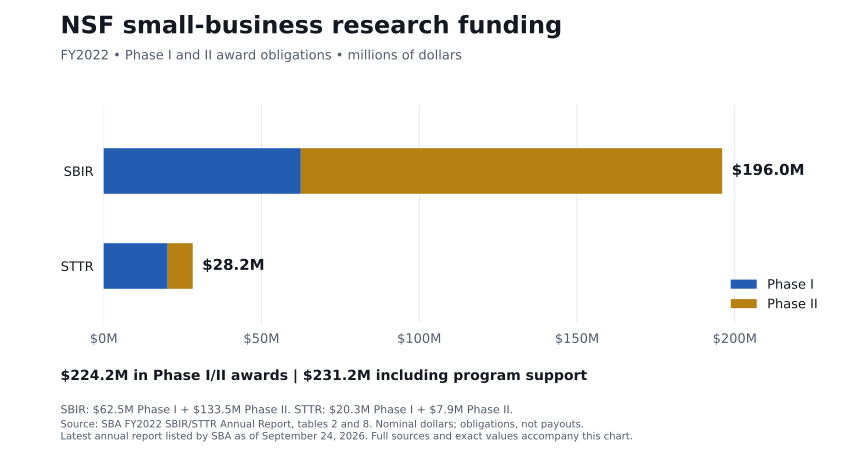
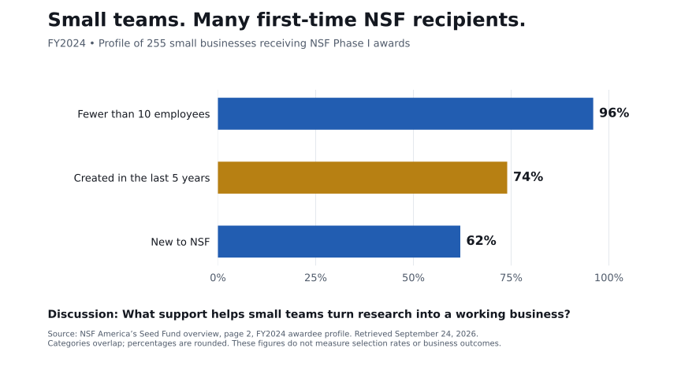

Funding scale and the businesses it reaches. Each chart identifies its reporting year.


| Program | Phase | Obligations | New awards |
|---|---|---|---|
| SBIR | Phase I | $62,484,586 | 245 |
| SBIR | Phase II | $133,536,202 | 114 |
| STTR | Phase I | $20,291,798 | 79 |
| STTR | Phase II | $7,928,046 | 7 |
New awards are not unique companies. Obligations can include support for existing awards. Total program obligations include $6,956,512 in agency assistance and administrative funding beyond these Phase I/II amounts.
Sources: SBA FY2022 annual report, tables 2 and 8; NSF FY2024 awardee profile, page 2. Retrieved September 24, 2026.
The newest annual funding report listed by SBA is FY2022. The FY2024 profile describes a different population and is not a funding trend. Categories overlap. SBIR/STTR are only part of small-business funding.